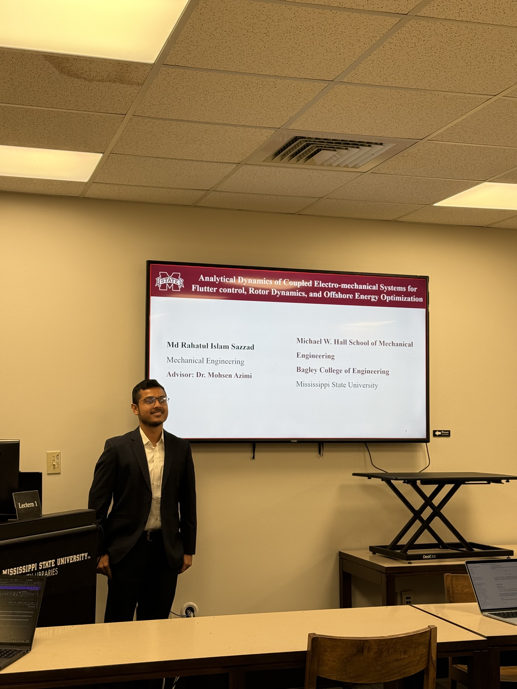

PhD Student
Manikanta Thati
Mechanical Engineering
Research: fluid-structure interaction, aeroelasticity, lumped-parameter modeling, high-difelity CFD, flutter, and vortex-induced vibrations.
Advancing Analytical Instability Prediction of Multiphysics System Under Aerodynamics and/or Hydrodynamics Loadings
The LPM-FSI Group website is currently under development. Some sections may be incomplete or temporarily unavailable.
Award #2535453 | $795,000 | Start Spring 2027
Principal Investigator: Mohsen Azimi
Interdisciplinary Advancing Workforce Skilled in Analytical/Numerical Fluid-Structure Interaction Analysis in Multi-Physics Systems
Students interested in any of the following disciplines are encouraged to apply.
Mechanical Engineering - Dynamic-system modeling, multibody dynamics, mechanical vibration, linear and nonlinear dynamics, and parametric instabilities.
Aerospace Engineering - High-fidelity CFD, aerodynamic loading, aeroelasticity, and flutter analysis.
Electrical Engineering - Modeling and simulation of electric machines, power-electronics converters and control systems, and power-system/grid dynamics.
Civil Engineering - Structural and thermal modeling, lumped-parameter representation, structural dynamics, and base excitation.
Ocean Engineering - Hydrodynamic loads, added mass, wave excitation, and dynamic response of floating structures.
Computational Engineering - Numerical implementation of coupled multiphysics models, numerical methods and algorithm development, high-performance computing, and numerical verification and convergence analysis.
Follow the three steps below to pursue an opportunity to join the LPM-FSI Group through the NSF EPSCoR Graduate Fellowship Program.
Already have a qualifying GRFP Honorable Mention? You may begin directly with Step 2.
Apply to the NSF GRFP for a graduate fellowship. NSF may also award Honorable Mentions to highly rated applicants who are not selected for funding. A qualifying Honorable Mention allows you to apply for the LPM-FSI Group EGFP opportunity in Step 2.
Engineering application deadline: October 22, 2026, at 8:00 p.m. Eastern / 7:00 p.m. Central
Recommendation-letter deadline: October 16, 2026, at 8:00 p.m. Eastern / 7:00 p.m. Central
Expected results: Early April 2027
Applicants with a qualifying GRFP Honorable Mention may apply to the LPM-FSI Group's NSF EPSCoR Graduate Fellowship Program (EGFP) opportunity through the NSF Education and Training Application (ETAP) system.
Create or sign in to your ETAP account, complete your applicant profile, locate the LPM-FSI Group opportunity associated with NSF Award #2535453, and submit the required materials.
Applicants are encouraged to submit their EGFP application early enough to coordinate with the Mississippi State University admission deadlines shown in Step 3.
Complete a separate Mississippi State University graduate application for direct Ph.D. admission in your preferred field: Mechanical Engineering, Electrical Engineering, or Aerospace Engineering.
Spring 2027: November 1, 2026
Summer 2027: May 1, 2027
Fall 2027: June 1, 2027
Applicants who already hold a qualifying Honorable Mention are encouraged to target Spring 2027. Applicants awaiting a new Honorable Mention should plan for Fall 2027.
LPM-FSI is a hybrid analytical–computational framework developed for modeling, simulation, and analysis of distributed-mass systems and their interaction within coupled multiphysics systems.
The framework combines governing-equation-based modeling, computational fluid dynamics, structural dynamics, analytical stability analysis, and high-performance computing to investigate aerodynamic and hydrodynamic loading, thermal effects, vibration, stability, and post-integration behavior, with particular emphasis on expanding analytical stability criteria for integrated multiphysics systems. Applications include renewable energy, offshore infrastructure, and propulsion systems in aerial, naval, and marine vehicles.
LPM–FSI method replicating the Turek-Hron benchmark: View the benchmark paper
Principal Investigator
Assistant Professor of Mechanical Engineering
As Principal Investigator, Dr. Mohsen Azimi provides the strategic direction for the LPM-FSI Group, defines research priorities, and oversees the planning and execution of individual and collaborative projects.
He mentors graduate and undergraduate researchers, reviews analytical and computational methodologies, coordinates interdisciplinary collaborations, supports proposal and publication development, and ensures the technical quality and scientific integrity of the group’s research activities.
PhD Student
Mechanical Engineering
Research: fluid-structure interaction, aeroelasticity, lumped-parameter modeling, high-difelity CFD, flutter, and vortex-induced vibrations.

Master's Student
Mechanical Engineering
Research: lumped-parameter FSI modeling, governing-equation development, MATLAB/Simulink implementation, and dynamic-system validation.